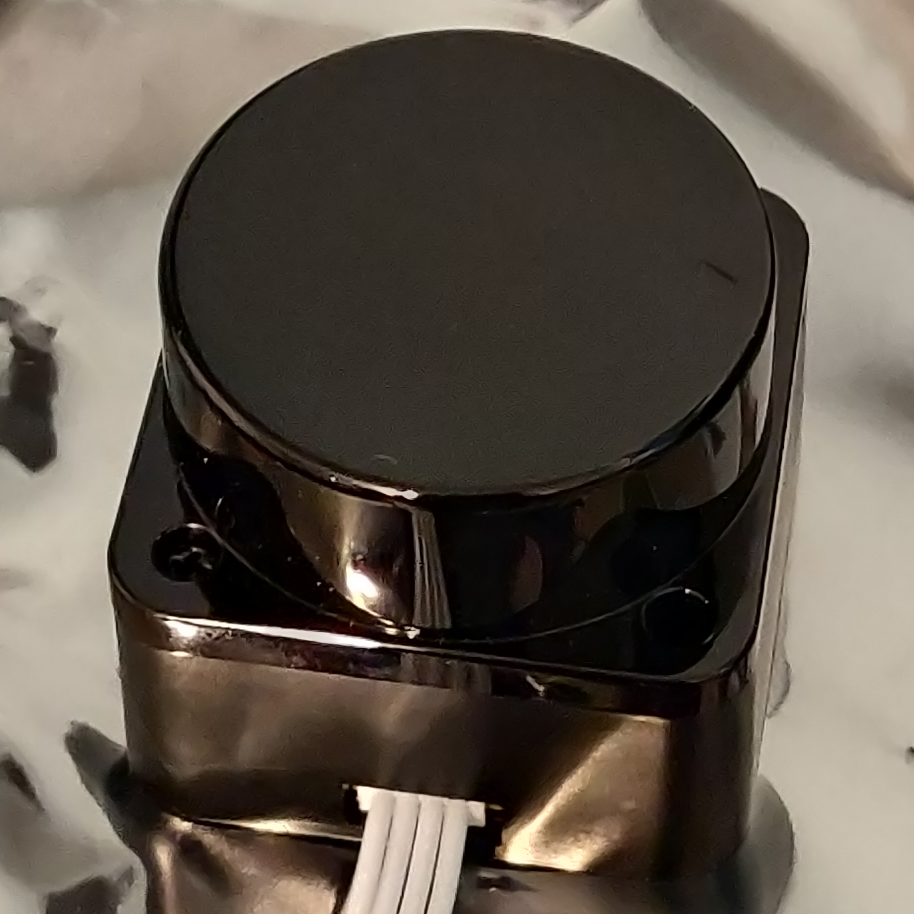
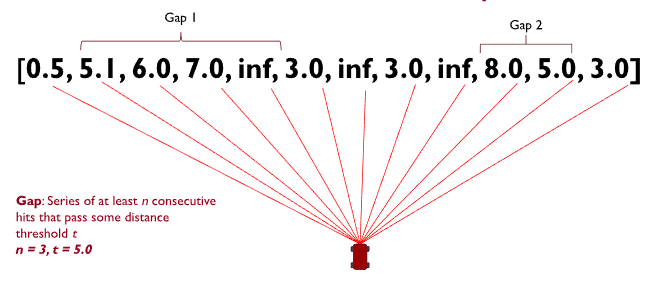

Introduction to The TinyKart ™️

TinyKart is the Intelligent System Club's entry level project to introduce new members to several areas of robotics, while having a strong supporting codebase to ensure it does not become overwhelming.
This book serves both as a reference and course for anyone looking to make their own TinyKart, or just curious on how any part of it works.
Some topics covered by this book:
- Setting up an Arduino environment in PlatformIO
- LiDARs, and processing their data
- UART communication
- Interacting with motors
- Ackermann kinematic models
- A basic autonomy stack built around sense-think-act:
- Basic reactionary planners
- Pure Pursuit
By the end of this book, you will have created your own implementation of a reference TinyKart. Armed with your newfound knowledge, you will then expand on what you've made, and race against other students!
Prerequisites
While this book assumes little of the reader outside a desire to learn, there are a few things we have to require:
- A Windows or Linux computer
- Mac may work, but is not tested
- Basic working knowledge of C++
- This book is about robotics, not C++. The C++ used is not very complex, but may require some googling if syntax is new to you. Additionally, the codebase makes use of modern C++ features like std::optional. When relevant, links to external resources are provided for your reference.
- Very basic electrical knowledge
- If you know what 5V and ground are, you're good.
Notable topics not covered
TinyKart is deliberately left basic, to fill the gap between something like E100 and F1/10. Because of this, a few major topics in mobile robotics are not covered, and are best learned through other media:
- Odometry
- Localisation
- SLAM and VSLAM
- Computer vision
- Control theory
- DSP
Why TinyKart
Note: this page is mostly for those more experienced, and are curious why TinyKart exists. If you're a student just looking to work on a TinyKart, disregard this page.
TinyKart may appear to be a bit redundant at first, so I want to justify why ISC created this program, and it's larger goals.
The Background
Before TinyKart, being onboarded into ISC was a rough process. New members were essentially just thrown unto a project and left to fend for themselves. While this did yield a few generational talents that ended up leading the team through each of its generations through their sheer motivation, this model ultimately limited the clubs scope.
Because of the classes at UofM Dearborn, it is functionally impossible for students under senior year to participate in robotics purely off knowledge from courses. In the case of CS majors, it is literally impossible, as all robotics courses are in a different department. This is why, if the club has no program, talent in ISC largely originates from pure tenacity and the loyal efforts of generally about 3 or so current members acting as mentors. This leads to teams around 8-10 in size.
The Problem
So why is this a problem? After all, ISC existed for years as essentially just a small group and did pretty well. While there are a few perspectives on this, I'll give mine as the software lead.
Bus factor, or program stability
Bus factor (noun): the number of people that need to get hit by a bus before your project is completely doomed.
I'm stealing this term from the wonderful Google SWE book. Bus factor refers to, rather crudely, the number of people on a project that can be hit by a bus before the project collapses. This is really just another way of calling someone a single point of failure, weather that be in their knowledge of some problem, or their organisational knowledge and rapport.
ISC's tendency to have a small, highly capable, ingroup leads it to be highly vulnerable to SPOF. This is rather self-explanatory, as with a small team it simply isn't feasible to distribute work among members, while the project is so challenging that its basically luck to find people capable of understanding everything.
While one can trivially expect this to cause issues when the bus hits, like missing deadlines, it causes a more existential issue.
Time is a bus
Every four years or so, people graduate. This means that, however careful you are, your SPOF will happen eventually. When your SPOF leaves, it's up to luck that someone puts in the time to take their place, only to become a new SPOF.
The answer to this issue is simple, of course - just train members.
In reality though, it's far more difficult. This is because the SPOF is the only one who can train members. This SPOF is also the one who is making the project possible however, so it's unreasonable to expect them to both mentor a ton of people and fulfill their work. This leads to a hideous cycle, where every four years the SPOF graduates, everyone who doesn't have the ability to take their spot leaves, a new SPOF is created, the club finally seems to get traction, they graduate, and the cycle continues. Indeed, this is the cycle the team has been in for the last four years.
TL;DR, a small team means you cannot train members, which means you cannot do cool things.
The Solution
TinyKart is our answer to the above problem.
In its simplest form, TinyKart is a course designed to bring a ton of people into the labspace, and get them to at least a base level understanding of robotics. From there, those that remain, for there will always be attrition, will have the chance to work in a team and experiment with software on a project far simpler and less daunting than large projects.
The goal of this is to break the cycle by iteratively growing the club body year by year. Critically, this doesn't mean that we want TinyKart to teach all that the team needs. Rather, it's just an interesting problem to get people in the labspace and up to a certain level of knowledge. Once they go to learn the big projects, they should be able to avoid the SPOF by means of numbers. Will this avoid a SPOF entirely? Probably not. But by virtue of pure numbers, it should be easier to, at least, train up the next year of TinyKart members, to avoid the team completely falling apart when the SPOF leaves.
With this in mind, TinyKart has a few major choices:
- It should have minimal prerequisites
- It should have fallbacks, so if someone fails they don't get left behind
- It should be doable without meetings at all if required
- Hence, this book
- It should focus on getting people to work together at ISC first, before critically challenging people
- This is why we don't cover localisation
- It should allow for more exploratory work later, after people are more committed to the club socially, and thus more willing to stick through hard parts
Why not F1/10?
I want to briefly address why we didn't just use F1/10, since this question comes up a lot. While F1/10 is great, it doesn't really meet the program needs above. For two main reasons.
First, It's just very expensive. The f1/10 platform is like $1500 all included, which is just crazy. TinyKart is around $350 all things included, which is far more scalable for us.
Second, because we don't want to get too deep into robotics for sake of accessibility, we want to avoid ROS. I love ROS, but it has a crazy learning curve, especially because you need to learn quite a lot of C++ to use it. Most of our new members barely even know C++, and often have only had one programming course. Conveniently, they have also almost all at least heard of Arduino, so it makes sense for us to exploit that. Because of this we also have to run with microcontrollers, which conveniently also simplifies the hardware considerably.
Hardware BOM
Note: If you are doing this with ISC, we already have this hardware available.
Kart
est. cost: $200

We use the Traxxas Slash as our platform. Unfortunately, it seems like it may no longer be available, so any brushed Traxxas RC car should also work. The slash was chosen for its size, but other RC cars should also be reasonable. The only part of the codebase that depends on the RC car is the ESC control, which we've found to not be portable to some other brand ESCs in the past. It may be portable with some work, however.
Note that you will also need a 2s LiPO.
LiDAR
est. cost: $100

We use the LD06 for our LiDAR. The driver will only work with this.
Nucleo
est. cost: $30

We use the STM32 H723ZG nucleo as our microcontroller. Pretty much any H7 should work, although pins may need to be reassigned.
Because we use the HAL in the background, some headers would need to be changed to use other series boards, like F4 or something. Porting to non-ST boards will require re-writing the logger.hpp and dma files.
Misc.
You should also have:
- A breadboard or something similar
- Some male to male jumper wires
- A micro usb cable
Installation
Before we can do anything cool, we're going to have to get the development environment setup. This guide should work on any operating system, but it will only be tested on Windows and Linux.
PlatformIO
First, let's install PlatformIO, which will include our IDE and build system. While this can be done in a few ways, we're going to be installing it via VScode, for sake of consistency. If you wish to use another IDE like CLion feel free to do so at your own risk.
To begin, navigate to the PIO website.
You should see something like this:

You're going to want to follow these steps, using the links on the site. Once you have the extension installed, I would echo the guide in reccomending the quick start , which gives a very good overview of how to do the normal IDE motions.
Testing the installation
Once you've got everything ready, try to open PIO home by clicking the little house:

This should open the home page:

Click on the "New Project" button. This should bring up a modal to set up a new project. Name this project whatever, and select "ST Nucleo H723ZG" as the board. Finally, keep Arduino as the framework, and finish the setup.
After some time processing, the editor should now open to a new Arduino project. On the file explorer on the left,
select src/main.cpp:

As you can see, the IDE has generated a same Arduino program, which should look quite familiar to anyone who has used the Arduino IDE before.
As well, note the new icons on the bottom bar of the IDE, which represent various PIO commands (build, upload, etc):

to make sure things are set up correctly, click the check mark shown above, which executes the build command. This should open a new terminal which displays the compilation. If successful, it should look like this:

Git
Next, let's install Git, the ubiquitous version control system. If you're on Linux, this is likely already installed. If you're on Windows, you likely don't.
Linux
For Linux users, it's best to install Git using a package manager, such as through apt on debain:
sudo apt install git
If you aren't on a debian based distro, then lets be honest, you don't need me to explain how to install Git.
Windows
For Windows users, run the Git installer from the project's website.
Setup
Finally, lets set up the tinykart codebase now that everything else is installed.
Clone
First, lets clone the tinykart codebase using Git. This will effectively copy code from GitHub and onto your local machine.
To do so:
- Open a CMD prompt on Windows (you can find this via a start menu search), or a terminal on Linux
- Use the
cdcommand to navigate to the directory you want to keep your code in. For example:cd C:\users\andy\documents\code\on Windows orcd ~\Documents\codeon *nix.- Keep in mind that some Windows systems have the documents folder direct to onedrive, so documents may not actually be in users\user\Documents
- Clone the repo using:
git clone https://github.com/andyblarblar/tinykart-academy - You should now see a folder called "tinykart-academy" which contains the codebase
Flash
Next, lets flash the code onto the MCU, and actually see it running. To do this, we need to:
- Open the codebase in vscode
- Connect the MCU to the computer
- Flash using PIO
Opening codebase in vscode
First, open vscode. This should open to the example project from earlier. To change to tinykart, go to the file tab, and select the "open folder" option, then open the tinykart folder:

Connect the MCU
Make sure that you never connect power to both of the USB ports at the same time, as this will kill the board. I have no idea why you would do this, but be warned.
The STM board we use has an integrated ST-Link debugger, which we can connect to over USB to flash the controller, debug, and more. To use this, connect a USB cable to the port on the side opposite to the Ethernet jack. If the port on the other side is used, then the debugger will not be attached.
You'll know the debugger is correctly connected when the MCU pops up like a USB drive. Make sure to mount this disk. This is how PIO will know how to flash the controller.

Flash
Finally, we can flash the code to the controller! This will involve compiling the code, creating the firmware file to flash to the controller, and actually programming the controller with that firmware. Thankfully, PIO makes this process trivial.
To flash:
- Head back over to vscode. Find the folder icon at the bottom of the screen, next to the build icon from earlier:
This button manages the controller we are targeting with this flash.
- Click this button, and select the nucleo_h7 option
- Find the -> button also on the bottom bar. This is the upload button, which will compile and then flash the controller.
- Click the upload button. This will open a new terminal displaying the compilation and flashing process. If compile errors occur, they can be viewed here. In this case however, there should be no issues, as the project contains only tested code.
If this process has succeeded, a few things will occur:
- The terminal will display success
- The board will have a blinking red LED during the flashing process, and the drive will remount afterwards
- The red, green, and yellow user LEDs on the board will now indicate the state of the system.
To show that it's working, click the blue user button on the board. This will toggle the yellow LED:

Congrats! You now have the tinykart software development environment setup. Before we dive in any further, I would recommend poking around the codebase and messing with the code.
Software Overview
Now that we have the codebase setup, let's briefly introduce what we're working with.
Arduino
Tinykart's embedded software is based on Arduino. If you somehow haven't heard of it, Arduino is an extremely high level (as in simple) embedded programming framework. It's designed to allow for beginners and hobbyists to engage with embedded programming without spending a semester reading docs. If you've worked with Arduino before, you've probably worked with the Arduino, the UNO v3:

What most don't know is that Arduino is actually completely independent of the UNO, mega, and other "Arduino" branded dev-boards. In this respect, Arduino is simply a C++ library, similar to something like ROS.
So how does this work then? Well, Arduino can be ported between boards using what are called "Cores". Cores are
basically
just implementations of the Arduino API (think writeDigital(), readAnalog() etc.) using different, lower-level
libraries specific to some board or vendor. This way, you can use Arduino the same way across boards, while the actual
implementation is free to change (encapsulation, for those in SWE).
Because we are using the STM32H723GZ, we will be using STM32duino, an implementation of Arduino for STM32 MCU. This Arduino core is based on the STM32Cube HAL, something the more experienced among you may have seen before. While not required, this does mean that we can actually use the STM HAL alongside Arduino, something that is used considerably behind the scenes, although you won't need to touch it.
So what do we have available to us?
- C++17
- The Arduino API
- The STM32 HAL
- The C standard library, via newlib
- The C++ standard library (or at least large portions of it), via newlib
PlatformIO
PlatformIO is a build system and project configuration platform that works at a level above frameworks like Arduino or the HAL. While I won't get too far into the details here, PIO generally allows for embedded projects to be much more flexible by allowing the use of different tools like IDEs, while also providing a dependency manager similar to the Arduino IDE.
One of the strongest features of PIO is its project structure, which allows for much more flexible projects than Arduino IDE. This section will describe how to navigate this project structure.
As of the time of writing, the tinykart repo looks like this:
├── docs
│ ├── io_setup.md
│ ├── pinout.md
│ ├── references.md
│ └── refrence.pdf
├── include
│ ├── dma.hpp
│ ├── logger.hpp
│ ├── pins.hpp
│ └── uart.hpp
├── lib
│ ├── gap_follow
│ │ ├── common.hpp
│ │ ├── f1tenth_gap_follow.cpp
│ │ ├── f1tenth_gap_follow.hpp
│ │ ├── naive_gap_follow.cpp
│ │ └── naive_gap_follow.hpp
│ ├── ld06
│ │ ├── ld06.cpp
│ │ └── ld06.hpp
│ ├── pure_pursuit
│ │ └── pure_pursuit.hpp
│ ├── README
│ └── tinykart
│ ├── esc.hpp
│ └── kart.hpp
├── platformio.ini
├── README.md
├── src
│ ├── dma.cpp
│ ├── main.cpp
│ └── stm32h7xx_hal_msp.c
└── test
└── README
- docs: Contains documentation about the implementation of tinykart, and other useful references.
- include: Contains all headers to be only used with tinykart.
- lib: Contains all local libraries. Allows for us to extract code that could work outside of this tinykart
implementation, making things more extensible and clean.
- gap_follow: My reference autonomous routines. You will be designing your own implementation of these.
- ldo6: A driver for the LD06 LiDAR. This is provided for your convience, and you are not expected to know how this works.
- pure_pursuit: Another reference implementation for you, to be redone for your own implementation.
- tinykart: Utilities for accessing the RC car hardware. While you will not be implementing these, they will be discussed.
- platformio.ini: PIO's configuration file. While you will not be required to touch this, for your own implementation this is where you would add additional libraries or board configs.
- src: tinykart implementation files, using the include headers.
- dma.cpp: DMA reader implementation. Don't worry about this
- main.cpp: Arduino main file. This is where the magic happens.
- stm32h7xx_hal_msp.c: Handles configuring the HAL for areas where we can't use Arduino, like the LiDAR. Don't worry about this, unless you are adding more sensors and also cannot use Arduino.
- test: Unit tests go here, although these are TBD.
TinyKart "Extensions"
To make things easier for you, we provide a bit of a framework for TinyKart, containing implementations of the harder parts of using Arduino to interface with the required hardware. This section will contain a brief explanation of these components.
TinyKart struct
The TinyKart struct, implemented in the tinykart local lib, is an abstraction for working with the RC car hardware. It
lives in global scope:
// Robot control
TinyKart *tinyKart;
You can use it to ex. move the steering to a certain angle, or set the throttle or brake:
// Actuate kart
tinyKart->set_forward(command.throttle_percent);
LiDAR utilities
The LD06 class is a driver for the LD06 Lidar. ScanBuilder is a class for working with the
raw data returned from the driver. These both live in global scope:
LD06 ld06{};
// Scan processor
ScanBuilder scan_builder{360 - 90, 90, ScanPoint{0.1524, 0}};
These will be introduced further in the next chapter.
Logger
NOTE: Because of newlib restrictions, attempting to print a floating point number will hardfault
Because we need to use the UART interrupt for the LiDAR driver, we are unable to use the Serial library. Because print
debugging is quite useful, we reimplement a basic equivalent. The equivalent to Serial is now a global logger
defined
in logger.hpp.
Ex. to printf:
auto target_pt = *maybe_target_pt;
logger.printf("Target point: (%hi, %hi)\n", (int16_t) (target_pt.x * 1000),
(int16_t) (target_pt.y * 1000));
Unlike the Serial library, this printf is actually non-blocking, and uses interrupts to process the message behind the scenes. This means that there will be some lag before the message is printed, as it needs to be queued for synchronisation purposes.
The Baby Lidar ☺
It's finally time to play with our first piece of hardware!
I would like to introduce the LD06, AKA Baby LiDAR!
LiDARs
So why do we even have a LiDAR? Well, LiDARs provide a means to get a slice of the world around you as distance data. This is extremely useful for mobile robots, since there really isn't another sensor that can give the same field of view as a LiDAR.
Generally speaking, there are two kinds of LiDAR, 2d and 3d. 3d LiDARs get distance values with both a vertical and horizontal angle. 2d LiDARs, like the LD06, only get distance values from a flat plane. This makes them far less versatile in the real world, but significantly easier to work with and cheaper.
To get a mental model of how a LiDAR works, think of a laser rangefinder, such as those used in golf. You point it at something, and it gives a distance reading at some frequency. Now think about what happens if we put that rangefinder on a spinning motor. as the motor spins the rangefinder, the rangefinder will read a different location each time, with a density of points proportional to is frequency. Given a high enough frequency, this readout will give you a 2d slice of the world around you as polar coordinates.
For a visualization, take a look at this diagram from the LD06 user manual:

Like all sensors, LiDAR has operating limits. For LiDARs, these limits are generally its frequency and range. Unsurprisingly, the LD06 is pretty bad at both, reading at 10Hz with a max range of 8-10m. This means that care needs to be taken to avoid outpacing the speed of the LiDAR itself.
UART
The LD06 of course needs to connect to our board somehow. While industrial LiDARs generally use Ethernet for this purpose, our little baby lidar uses UART. UART, or RS232 (kinda, I'm not opening that debate) is a very simple protocol for communication between embedded processors. While I won't get super into the weeds with how UART is implemented, think of it as a very minimal layer over the idea of sending data over a wire as binary via high and low signals. In hardware, UART is implemented (In most modern uses) as simply two or even just one wire, like so:

UART is an asynchronous protocol, that is, it does not have a clock line. This means that without prior configuration, the receiver would have no way of knowing how fast the sender plans to send high and low bits. For UART, we call this rate baud, measured in bits per second (effectively). This gives the advantage of removing the clock wire and thus requiring less hardware, at the expense of anguish if you configure your reciver to a different baud than the sender.
Also worth noting is that UART has no link-layer error detection, so higher layer protocols using UART almost always include error detection methods such as Cyclical Redundancy Checks (CRCs) to ensure data integrity should there be electrical noise in the system.
Connecting Baby Lidar
Preamble aside, lets get the Baby connected. From the manual, the LD06 has the following pinout:

As you can see, the LiDAR actually only has a UART transmitter, which means we will only need a UART receiver (Rx) on the board side. The PWM input is unused, and the other two pins are simply power and ground.
While there are a variety of ways to connect these to the board, TinyKart is configured to use the following pins:

Go ahead and connect these to the respective pins on the wire connected to baby lidar. The end result should look something like this:

With that being said, it's time to see the little guy come to life! Just plug in the board, and the LiDAR should spin to life!

Reading Baby Lidar
First off, we need to figure out how to actually read the UART line connected to the LiDAR. This can be done in one of two ways:
- Polling: Checking if a byte has been received in the arduino loop()
- Interrupts: Having hardware call an interrupt request handler (IRQ) function whenever a byte arrives
Generally, polling is going to be slower but more convient, whereas interrupts require hardware support but allow for hardware to communicate in parallel with your programs' execution.
By default, Arduino essentially only allows for polling, as it uses the IRQ itself behind the scenes. This unfortunately is actually too slow for how fast the LiDAR runs, so we have to make our own approach using interrupts. This is actually quite complex and delves into STM HAL code, so the code won't be discussed here (if you're curious, check the dma.cpp file).
The LD06 sends its data in frames with the following format:

As you can see, each frame from the lidar will be 47 bytes, and contain data between some start and end angle. Notice
how
all data is in large integer values. This is because sending floats over the wire is quite inefficient, so we simply
scale
up the values and use ints instead. The LSB and MSB refers to least and most significant bit respectively. This
indicates
the endiness of the data, or the ordering of each byte in multibyte structures. For example, if 0x270F(9999 decimal)
is
sent over this UART protocol, then it will actually be read and sent as 0x0F27. While this seems insane, this is
actually
how the ARM processor on the board already stores the ints. So by doing this, we can do simple C pointer magic to read
the two bytes as a 16-bit integer:
packet.radar_speed = *reinterpret_cast<uint16_t *>(current_scan + 2);
With all this layed out, our approach looks like the following:
- LiDAR sends bytes over the UART
- UART peripheral triggers IRQ
- We copy a single byte to a buffer of bytes in RAM (literally just a uint8_t array)
- Repeat until we have 47 bytes
- Once we have 47 bytes, we need to figure out where the frame starts. To do this, we find the 0x54 start header. Align the buffer to now start at this byte.
- If that were to make us under 47 bytes, exit and wait for more
- Else, process the frame data into a C++ struct using the above pointer technique
This approach is implemented in the ld06 driver provided for your use.
Review
Alright, that was quite the infodump. Let's take a look at the code you'll be working with, and actually see what this looks like in action.
Open main.cpp.
On line 15 you'll see the creation of our driver:
LD06 ld06{};
Farther down in the setup, you'll see us configuring our callback to copy the buffer to the driver in the IRQ:
// Init DMA and UART for LiDAR
dmaSerialRx5.begin(230'400, [&](volatile LD06Buffer buffer) {
// On each packet received, copy over to driver.
ld06.add_buffer(buffer, 47);
});
Finally, we poll the driver to see if a scan has been processed in the loop:
noInterrupts();
auto res = ld06.get_scan();
interrupts();
Interrupts are disabled around the LiDAR to avoid issues when a new buffer arrives and starts copying right as we read the previous buffer (known as a race condition).
The processed scan frames have the following layout:
struct LD06Frame {
/// The rotational speed of the unit, in degrees per second.
uint16_t radar_speed;
/// The starting angle of this scan, in degrees.
float start_angle;
/// Distance readings.
Range data[12];
/// The ending angle of this scan, in degrees.
float end_angle;
/// The timestamp of this scan, in ms. This will roll over at 30000.
uint16_t timestamp;
/// The CRC check from the lidar.
uint8_t crc8;
Remember that each range is just a distance reading, which occurred at some angle. To retrieve this data, we must interpolate the index with the start and end angles:
[[nodiscard]] float get_angle_of_reading(uint8_t reading_idx) const {
assert(reading_idx < 12);
auto angle = start_angle + get_step() * float(reading_idx);
if (angle > 360.0) {
angle -= 360.0;
}
return angle;
}
With this, we have all that we need to interpret frames from the LiDAR! Armed with this information, I recommend messing around with main.cpp to log data read by the board, and monitor the results by using the PIO monitor.
To open the monitor, first find the terminal icon in the bottom gutter near the upload button. This will open a terminal
with the pio command sourced. Next, open a monitor to view the boards printfs by
running pio device monitor -b 115200.
Scan Building
Cool, so we can read frames. As it turns out, this actually isn't all that useful. This is because each frame actually only covers a very small region of the overall scan. This makes sending the LiDAR data much easier, but makes processing on our end a bit more complicated. To remedy this, we must assemble scans by hand, as we receive frames. During this process, we can also do other forms of filtering on the frames to make the data easier to work with. This is generally called scan preprocessing, and is done on actual industrial robots.
Our approach:
- for each frame:
- If frame is in the range we want to read
- If reading is noisy, ignore it
- Convert each range to (x, y) coordinates about the lidar, from polar. Store this in a buffer.
- else, if the last frame was in range, and thus our desired scan area is full, return the completed scan.
- If frame is in the range we want to read
This is implemented in the ScanBuilder class:
/// Adds a frame to the scan builder
std::optional<std::vector<ScanPoint>> add_frame(const LD06Frame &frame) {
// Filter to in range
if (scan_in_range(frame.start_angle, frame.end_angle)) {
last_scan_in_bounds = true;
// Convert points to cartiesian points
for (int i = 0; i < 12; ++i) {
// Skip points that are outside the scan, but some in the frame are
if (!scan_in_range(frame.get_angle_of_reading(i), frame.get_angle_of_reading(i))) continue;
auto [range, angle] = frame.get_range_in_polar(i);
float radian_angle = angle * (float(M_PI) / 180);
float x = range * sinf(radian_angle);
float y = -(range * cosf(radian_angle));
// Read noisy points as 0, which is what unreadable points are also received as
if (frame.data[i].confidence < 150) {
x = 0;
y = 0;
}
// Convert from mm to m
x /= 1000;
y /= 1000;
// Apply lidar offset
if (x != 0 && y != 0) {
x += lidar_offset.x;
y += lidar_offset.y;
}
buffer.push_back(ScanPoint{x, y});
}
}
// Full scan area covered
else if (last_scan_in_bounds) {
last_scan_in_bounds = false;
return std::move(buffer);
}
In the tinykart default implementation, this is configured to read from -90 to 90 degrees:
ScanBuilder scan_builder{360 - 90, 90, ScanPoint{0.1524, 0}};
Putting it all together
Time for you to get your hands dirty! Before anything else, replace your loop with the one below:
void loop() {
noInterrupts();
auto res = ld06.get_scan();
interrupts();
// Check if we have a scan frame
if (res) {
auto scan_res = *res;
// Check if frame erred
if (scan_res) {
auto maybe_scan = scan_builder.add_frame(scan_res.scan);
// Check if we have a 180 degree scan built
if (maybe_scan) {
auto scan = *maybe_scan;
logger.printf("*****START SCAN******\n");
for (auto &pt: scan) {
logger.printf("Point: (%hu,%hu)\n", (uint16_t) (pt.x * 1000), (uint16_t) (pt.y * 1000));
}
logger.printf("*****END SCAN******\n\n");
}
} else {
switch (scan_res.error) {
case ScanResult::Error::CRCFail:
logger.printf("CRC error!\n");
break;
case ScanResult::Error::HeaderByteWrong:
logger.printf("Header byte wrong!\n");
break;
}
}
}
}
This code builds on the review section, and now also prints out completed scans, once they are built. Flash this to your board, and open the PIO monitor. You should see data blaze by.
Try putting our hand around the LiDAR. You should see the values lower. Something to note about these cartisian coordinates is that they are in right-hand-rule. That is, x is positive forwards and y is positive to the left. This is the standard coordinate system in robotics.
Homework
Now it's time for your challenge. Given the above code, create a program that prints "GOTCHA!" whenever someone is 50cm or less from the back of the LiDAR. This will only require modifying things in main.cpp, and only in loop and the globals. If you have any questions on units, formats etc., read the docs in the code! This is good practice for working on larger projects, since rarely will there be guides as verbose as this one to step through the code.
Good luck!
Moving the Kart
Now that you have given TinyKart its proverbial eyes with the LiDAR, it's time to give it its proverbial legs (this sounded better on paper lol). Specifically, we will be going over how to actually make the kart steer and accelerate. Much like the LiDAR, you won't be writing all the driver code, but it's very important to understand how it all works, since the patters appear all over embedded programming.
Hardware
Before we can program the hardware, we first need to discuss, well, the hardware! In robotics, anything that can make a piece of a robot move is called an actuator. For example, the wheels on a Roomba, or the claw on Spot.
The Traxxas Slash has two main means of actuation:
- Steering
- Accelerating the rear wheels
Steering is achived with a servo motor:
![]()
Servos are motors that are designed to hold a particular position, rather than continuing to rotate. By adding another linkage, this rotational angle can be converted to a linear position, thus creating a linear actuator that can hold a particular distance. As it turns out, that's exactly how steering works! Essentially, mechanical linkages are geometrically connected to the servo such that each far end of the servos range will cause the wheels to reach their max turning angle.
On the other hand, accelerating is something that requires a continues axis, so a servo would make no sense. In this case, the RC car simply uses a brushed DC motor:

While discussion on brushed motors is better done by the more electrically inclined, a simple way to understand these things is that when you apply a voltage across the two leads, a magnetic field in the motor forms, moving the output shaft:

Critically, the polarity of the voltage across the leads must switch, or else the motor will just stall. Thankfully, there is dedicated hardware designed to do this for us, called a motor controller or ESC (Electronic Speed Control). The ESC on the Slash looks like this:

The ESC sits between the battery and the motor, controlling the polarity and power as required to reach some level of output speed. This means that when we want to move the motor, we need to interact with the ESC.
Interface
So how to we actually control these actuators? Conveniently, they actually use the same exact interface. That is Pulse Width Modulation (PWM).
PWM shows up all over electrical things, both as an effectively analog power source, and as a digital signal, as it is used here. The idea of PWM is to represent an analog range like 0-100% using a digital signal, which can naturally only be 0 or 1. While this could be done by sending binary integers, that would be extremely inefficient. Instead, PWM works by creating set periods of time. Inside these periods, the percentage of time the signal is high versus low is the analog value itself, called the duty cycle. For a visualisation:

The issue with this approach is that because the duty cycle is time on over period, the frequency of the PWM signal must be set in stone. For historical reasons, RC cars do not like this, and use a different approch, called Pulse Period Modulation.
In this formulation, 0-100% is not the duty cycle, but rather a range of time the signal is high versus low. For example, most servos use 1.0ms high for min angle, 1.5ms high for their midpoint, and 2.0ms for their max angle. This approach means that any frequency with a period greater than 2.0ms can control the servo, allowing it to work with very cheap hardware.
As it turns out, this is also exactly how the ESC works! The only difference being that 1.0ms is full reverse, and 2.0ms is full forward power.
Setting up the hardware
Alright, now it's time for you to set up your controller to connect to these actuators. To do this, we're going to have to do a tiny bit of wiring to get stuff setup. Each of the actuators has a connector like this:

For the servo these pins mean:
- Red: 5V in, to power the servo
- Black: Ground
- White: PWM control signal in
For the ESC these pins mean:
- Red: 5V out, to power the servo
- Black: Ground, to battery
- White: PWM control signal in
Our goals for wiring things up is to:
- Connect ESC 5V out to servo 5V in
- Connect ESC and servo PWM to pins on the controller
- Connect all three to common ground
To do this:
- Make sure the system is powered off
- Jump the ESC 5V to servo 5V
- Jump ESC and Servo ground together using a breadboard
- Jump a ground pin from the controller to the same breadboard lane as the other two grounds, creating a common ground
- Finally, jump the ESC and Servo PWM lines to these exact pins:
Red being A0, and green being D0.
Now, connect the battery to the esc, and power to the controller. Now, press and hold the little blue button on the ESC to turn it on. Finally, reset the controller. You should see the kart do a little jump, and maybe move its wheels. This is good! This means that the ESC is armed, and ready to move.
The code
Now that things are hooked up, you can move the kart with commands on the TinyKart class:
tinyKart->set_forward(command.throttle_percent);
tinyKart->set_steering(command.steering_angle);
Feel free to explore the other methods on the class, as they allow for movement in other ways, such as in reverse.
While this high level API is all you will be working with for the autonomy, I want to briefly show how its implemented:
/// Sets the esc to power forward with some 0.0-1.0 percent.
void set_forward(float power) const {
assert(power <= 1.0 && power >= 0.0);
// Forward is 1.5-2.0ms periods
auto value = uint16_t(((1.5 + power * 0.5) / period) * max_pwm_duty);
analogWrite(pwm_pin, value);
As you can see, its actually rather simple, thanks to Arduino. I want to untangle that second line for you, since there's really two things going on here.
First, the value of that line is the value we are setting the hardware PWM peripheral's register to control the duty cycle. Because PWM is digital, we can only output duty cycle percents up to some resolution in bits. Think of these as buckets, and the more buckets we have the more we can slice the 0-100% range into finer pieces to uniformly distribute among the buckets. For example, Arduino defaults to an 8 bit PWM, which means that setting the register to 255 will be 100% duty cycle, 0 will be 0%, and 255//2 will be closeish to 50%.
In the case of our ST board, we have a 12-bit PWM, which means that we have 4092 "buckets". This means to select some percent duty cycle, you use the equation: \( power * 4092 \), where power is in range [0, 1].
Second, the analogWrite call sets duty cycle, not duty width, which is what we're looking for. This means that we need
to map our desired percent first from percent to width in ms, then from ms to duty cycle, then duty cycle to register
value. This is exactly what that one-liner is doing. From left to right:
- Our forward time range is 1.5-2.0ms, so divide our power by 2 and add it to 1.5, to get our desired percent in time domain.
- We need this time width in duty cycle, so we now need to find the percent of time that width takes out of the
complete PWM period.
To do this, we just divide by the period, which is just a constant set in
setup(). - Finally, take this 0.0-1.0 duty cycle and multiply it by the max register value (4092 here) to get the value to write to the register.
- Write the value to the register using
analogWrite.
The servo works exactly the same, except split over left vs right rather than reverse vs forwards.
Stop and think
Now I said this is important to understand, even if you won't be writing it. Now's the time to ponder how this setup could influence the autonomy. Before you see the explanation, please think this over for a moment, to make sure you have a good grasp on things.
An answer
I would say this setup has two main consequences upstream in the autonomy stack:
- Latency
- Precision
First, because PWM signals have a set period width, this limits the rate at which we can update the steering and speed, since we must wait for the prior PWM period to end before we can change the duty cycle. While this isn't of massive significance, It's something to consider as adding, ex. 10ms of latency at 100Hz (what the reference code you have is using) is actually quite a large value on the embedded world.
Second, 12-bits of resolution is quite high, but because we are stuck with only using small period ranges, we actually have very little resolution. This means that while you can still get rather specific with your steering angles ( certainly fine for our use), small angle increments can sometimes have no effect or a large effect depending on if it causes us to step into another "bucket".
While neither of these are really something you need to worry about, its worth taking the time to think about how your hardware will constrain your autonomous routines, as this is something that is far more pronounced on a full size vehicle.
Homework
Alright, now it's your turn to make the funny RC car move. Keep building off your last code, although you will need to hack it a bit.
Your challenge today is to make the kart slow proportionally to the distance in front of it. This will be very useful in the autonomous routines later, as it will help prevent the kart from sliding around. Doing this will require you to use distance values from the LiDAR again, but with it facing forward as is proper. Specifically, the kart should be able to avoid hitting an object with much speed, and preferably stop before hitting it at all. Consider experimenting with using reverse as a brake.
Start slow and build your way up in speed and see how fast you can go! This experience will come in handy later when testing autonomous things.
Note that when the kart boots, it starts in a paused state, indicated by the yellow LED. In this state, it rejects all commands. To allow it to move, press the blue button. Press the button again to stop the kart (this is what you were doing the first day!). If you want to use this functionality in your own code (like to stop if the kart hit something):
tinykart->pause(); // Stops
tinykart->unpause(); // Starts
Some notes before you start:
- When running the kart in motion, make sure everything is well secured. Perhaps consult your friendly ME peers to see how to do this well. In particular, if ground is disconnected the kart goes wild, so be careful.
- The controller can be powered off of mobile battery banks, not just from a laptop. Use this to make the kart cordless. The controller will boot to its last flashed code.
- The kart is fast! On slippery floor especially it can really get away from you, so I recommend capping the speed at around 0.3 at most. It also tends to stall around 0.15. For grippier floors like carpet, move that range up a bit.
To set the karts max speed, modify the 3rd parameter in the TinyKart constructor:
tinyKart = new TinyKart{STEERING_PIN, esc, 0.3, 4.5};
The Part Where we Make it Move
Ladies, gentleman, baby lidar - it's finally time to make TinyKart autonomous!
This is going to be a multipart process, and be quite a bit more involved than the prior sections. This is why we're doing this project after all.
Sense-Think-Act
Before we look into algorithms, I want to give a very brief look at the way mobile robotics is 'normally' done. This will be very high level, but should you give you a decent mental model of what we've been doing this whole time.
At a high level, autonomous stacks can be described using 'sense-think-act', a pretty ancient paradigm but one that works for a simple system like TinyKart.
For TinyKart, sense think act looks like the following:

The idea of sense think act is that most robotics solutions form a pipeline where you read from sensors, plan based off that new data, execute those plans, and finally repeat this over and over as the sensors get new data, and you progress towards your goals.
As you can see, you've actually already completed sense and act. All you need to do now is think, and wire it all together!
Planning
For mobile robotics, the think step above generally encompasses two main processes:
- Path Planning
- Path Tracking
Path Planning
Path planning is the act of taking the state of the world as input, and outputting a path for the robot to follow. How this is done is entirely dependent on your sensors and goal for the robot.

Generally speaking, a path is represented as a sequence of points to follow, rather than a line or something. For TinyKart, we will actually only plan to a single point as we lack any sort of feedback on our speed, required to use multipoint paths.
Path planning algorithms span from general algorithms like A* or RRT to bespoke algorithms such as the gap algorithms you will be writing.
Path Tracking
Path tracking algorithms take paths from a path planner and actually calculate the command the robot needs to perform to follow the path.
By command, we mean the value all actuators should be set to continue following the path. Because of this, path trackers are independent of the path planner, but do depend on the actuators and geometry of your robot, known as kinematics.
For multipoint paths, this generally looks like:
- Sample path to find next point we should head to
- Determine command to reach this point
For our single point path, we only need to do step 2, which is considerably easier.
For examples of path planning algorithms, see Pure Pursuit, DWB, and MPC.
The following chapters will go more in depth on these two topics.
Planning: Follow the Gap
NOTE: This chapter is basically just an adaptation of F1/10ths chapter on the same subject (thanks creative commons!). Please give their content a look for more info.
As mentioned before, the first part of our autonomous stack will be the planner, which determines the point we want to send the kart to.
As discussed prior, what a planner actually does depends on the goal of the robot. In the case of TinyKart, that would be:
- Do not hit things
- Complete laps around an enclosed circuit as with the lowest time possible
Thus, a planner for TinyKart should aim to maximize these goals. The planners introduced in this chapter will not be the best for this task, but show a possible approach.
Considering these goals is important, as many existing approaches to planning (such as A*) don't make a ton of sense in the context of TinyKart, and will lead to suboptimal results, even if they are completely acceptable in other contexts.
Naive Follow the Gap
First off, we will introduce planners using F1/10ths follow the gap. This is an incredibly basic algorithm that decides the next point to head to by simply finding the center point of the largest gap in each scan.
Based off this description, the algorithm would look something like:
- Given scan
- find the start and end index of the largest gap
- Return target point as
scan[(start_idx+end_idex)/2]
Of course, this is rather hand waving away item 2. What even is a gap? We can model one as a set of points from the scan that fulfill two conditions:
- All points are greater than some distance
- The points are in a continues sequence
Thus, the algorithm now looks something like this:
- Given scan
- for point in scan
- if point dist is greater than threshold
- increase length of current gap
- set the start index of current gap to index of point if this is the start of a new gap
- else, a gap has ended
- if gap length is greater than threshold
- add gap to collection of gaps
- reset gap tracking variables
- if gap length is greater than threshold
- if point dist is greater than threshold
- If there was an ongoing gap on the far side of the scan when the loop ended, add that gap
- Find the largest gap in the collection of gaps (Hint: what data structure would be good for this?)
- return the center point of that gap as the target point
And as it turns out, that's really the best you can make the naive approach. The downfall of this approach is that it has a tendency to cut corners, as the kart's limited turning radius means it needs to approach the corner from the far wall in order to arc properly. The next approach we will discuss will aim to solve this.
Your turn
NOTE: This section makes use of C++'s std::optional. If you haven't worked with it before, please check out this article here.
While things are still simple, it's time for you to get your hands dirty and get this kart moving autonomously! In this section, you will be implementing the above algorithm yourself. To begin, replace your main loop with the following:
code
/// Finds a target point to drive to by finding the largest gap in the scan.
///
/// \param scan Lidar scan
/// \param min_gap_size Minimum number of points in a gap required for it to be considered a gap
/// \param min_dist Minimum distance for a point to be considered part of a gap, in m
/// \return Target point to drive to, if a gap is found
std::optional<ScanPoint> find_gap_naive(const std::vector<ScanPoint> &scan, uint8_t min_gap_size, float min_dist) {
// TODO
}
void loop() {
noInterrupts();
auto res = ld06.get_scan();
interrupts();
// Check if we have a scan frame
if (res) {
auto scan_res = *res;
// Check if frame erred
if (scan_res) {
auto maybe_scan = scan_builder.add_frame(scan_res.scan);
// Check if we have a 180 degree scan built
if (maybe_scan) {
auto scan = *maybe_scan;
auto front_obj_dist = scan[scan.size() / 2].dist(ScanPoint::zero());
// If object is 45cm in front of kart, stop (0.0 means bad point)
if (front_obj_dist != 0.0 && front_obj_dist < 0.45 + 0.1524) {
tinyKart->pause();
digitalWrite(LED_YELLOW, HIGH);
}
// Find target point TODO tune your params
auto maybe_target_pt = find_gap_naive(scan, 10, 2)
if (maybe_target_pt) {
auto target_pt = *maybe_target_pt;
logger.printf("Target point: (%hi,%hi)\n", (int16_t) (target_pt.x * 1000),
(int16_t) (target_pt.y * 1000));
// Find command to drive to point
auto command = pure_pursuit::calculate_command_to_point(tinyKart, target_pt, 1.0);
// Set throttle proportional to distance to point in front of kart
command.throttle_percent = mapfloat(front_obj_dist, 0.1, 10.0, 0.15, tinyKart->get_speed_cap());
logger.printf("Command: throttle %hu, angle %hi\n", (uint16_t) (command.throttle_percent * 100),
(int16_t) (command.steering_angle));
// Actuate kart
tinyKart->set_forward(command.throttle_percent);
tinyKart->set_steering(command.steering_angle);
}
}
} else {
switch (scan_res.error) {
case ScanResult::Error::CRCFail:
logger.printf("CRC error!\n");
break;
case ScanResult::Error::HeaderByteWrong:
logger.printf("Header byte wrong!\n");
break;
}
}
}
}
Don't worry about the loop much for now, as it contains the path tracker you will be making next chapter. A reference
implementation is included here to ensure that you can test your planner. All you need to work on for now is find_gap_naive,
which will contain the algorithm detailed above.
Once you have a complete implementation, test it with the tinykart in a relatively constrained space, so the lidar can see things. Don't stress too much if it isn't perfect, but try to hack on the algorithm until you're confident you can't make it better.
This will likely take quite a long time, possibly days depending on how much time you have to work on TinyKart. Feel free to take your time with this, and ensure you understand what is happening. This process will be very similar to when you're working on it yourself, so its important to get this down.
If you're ever completely stuck, there is a reference implementation in libs/gap_follow/naive_gap_follow.cpp.
I would still try to finish this yourself though, because there are many ways to approach this implementation and things
only get more complex from here.
An Improved Approach
With that experience under your belt, lets introduce another approach to the problem. This approach can be summarized as "Throw yourself at the largest wall".

Essentially, we redefine the largest gap to be the largest continues non-zero span of points. This means that our target point will fling us directly at a wall. That's insane! Why would we want to do that? The idea is that doing so will cause us to be on the outside of corners, which means that when we corner our kart will have a wider angle to perform its turn. Done well, this almost looks like a racing line. Of course, with the current implementation, we will just plow into a wall. So what stops us from doing so?
To solve this issue, we add a "bubble" that removes points in front of the kart. This looks like:
- Find the closest point in the scan to the kart
- Find all points r distance away from that point
- Set all those points to 0
Because our gaps cannot contain zeroed points, this means that the kart cannot continue to head towards a wall, since when it gets too close, those points are zeroed. This has the effect of the kart bouncing from the largest wall to the largest wall, which has the desired cornering properties mentioned above.
Your turn
As it turns out, this bubble approach is actually very similar in implementation to the algorithm you just implemented. It's main differences is the addition of the bubble, and the definition change of the gap. Otherwise, you are still searching for the largest gap, and still need to scan the scan for gaps.
Take your prior implementation, and adapt it to this new approach. You will need to modify both the function arguments and body, but the rest of the code should still be fine.
Once you've got this working, you're at feature parity with the reference kart! As before, a reference implementation of this algorithm is in libs if you get stuck. Try to avoid using it though, as this will be great practice for working on larger projects where I won't just hand you a template.
Good luck!
Path Tracking: Pure Pursuit
NOTE: This chapter makes significant use of resources from this article, adapted for use in TinyKart. Please take a look there for more details on the math side of things.
Now that we have a target point, all you need to do is find out how to actually get the kart there. This is the responsibility of path trackers.
Much like path planners, path trackers come in many varieties, depending on the robot and requirements. For example, some planners like Pure Pursuit simply directly head to the target, some like ROS's DWB attempt to avoid obstacles, and some use advanced control algorithms such as Model Predictive Control to attempt to also handle vehicle dynamics (such as wheel slip). These range in difficulty of implementation from elementary to reasurch.
In the last chapter, you were using a reference implementation of pure pursuit. In this chapter, you will learn how to reimplement this yourself, and get a better idea of how to tune it.
Kinematics
Before we can talk about pure pursuit, we first need to introduce vehicle kinematics. Kinematics is the study of how things move without respect to forces (dynamics). For example, the kinematics of a car define where the car will go given some steering angle input alone, without considering things like wheel slip that depends on surface friction. While far less accurate than using dynamics, robot kinematics gives us a good estimation of how our robot should move given some command.
Because kinematics doesn't depend on forces, it could be said that it instead relies on geometries. This means that the physical layout of the robot defines your robot's kinematics. While these are theoretically infinite, they tend to come in only a few varieties:
Differential Drive:

Skid Steer:

Omnidirectional:

And of course...
Ackermann:

Ackermann Kinematics
Because cars use ackermann steering (as any other mechanism would fail at speed), we will only discuss ackermann kinematics in detail. Conveniently, the kart also uses ackermann steering so all of these equations apply to your real work.
While one could model vehicle kinematics using all four wheels, it's common to simplify them down even further to just two - the bicycle model:

At this level of simplification, things should be pretty clear. To break it down:
- \( \delta \): The angle of our front wheel. In actuality, this is the average of your two front wheels. Note that because of the right triangle formed by the wheels, the angle of the ICR is actually the same as our front wheel, which we can exploit.
- R: The radius of the circle our rear axel is following, aka the current turning radius. This is the single thing that identifies the path we will follow.
- L: Wheelbase, only useful as the opposite side of the right triangle.
Some things to note:
- The vehicle turns about its rear axle, so we consider the position of the rear axel the position of the robot.
- L is constant, so either \( \delta \) is chosen to find some R, or R is chosen to achieve some \( \delta \).
- Using this model, robot motion must always occur in arcs.
- There is a minimum turning radius a vehicle can make, governed by its wheelbase.
- Velocity does not change turning radius, but it does change if you will slip while making that turn.
Pure Pursuit

With that model in mind, we can now introduce pure pursuit. Pure pursuit is a path tracker that computes the command to reach some target point by simply calculating the arc to that target point, and heading directly towards it. With this in mind, it's clear why Ackermann kinematics are useful, as they give us a means to find a steering angle given an arc.
Pure pursuit is a tad more than that, however. It's main trinket is lookahead distance. Basically, PP will only calculate arcs to points so far away from itself, in order to strike a balance between making sudden turns and slow turns. You can think of lookahead distance as a tunable parameter that sets the "aggressiveness" of the karts steering.
Let's go through a pure pursuit iteration step by step.
Enforce lookahead
When using a path with multiple points, the first step would be to find the intersection of the lookahead distance and the path, in order to find the target point. For TinyKart we already have the target point, so this step isn't needed. However, we still need to include the lookahead distance somehow, else pure pursuit will turn far too slowly.
To do this, we simply do the following:
- if dist(target) > lookahead
- set target point to lookahead distance, while preserving the same angle. This can be done easily with some trig.
- else, target is within lookahead, so just use target.
Calculate arc to target

To calculate the arc we need to follow to reach the target point (which remember, is given by R), we can exploit the geometry of the problem.
To find R, and thus the arc, we can use the law of sines in the geometry above to derive:
\[ R = {distinceToTarget \over 2\sin(\alpha)} \]
Calculate steering angle for arc
Finally, we need to calculate the steering angle required to take the arc described by R.
By the bike model discussed prior, you can see that the steering angle relates to R by: \[ \delta = \arctan({L \over{R}}) \]
By substituting R for our arc found in the last step, we can solve the equation to find the required steering angle \( \delta \).
Now that we have our steering angle, which is our command, pure pursuit is complete.
Visual
For a visual representation of pure pursuit in action, take a look at our pure pursuit implementation for Phoenix:
Tuning
Before I hand things off to you, I want to give a brief overview of tuning pure pursuit, since there isn't much media on it.
As mentioned before, lookahead is the main parameter for pure pursuit. For TinyKart, it directly controls the aggressiveness of a turn, since we drag target points closer to the kart, rather than sampling a closer point on a path. Because of this, a closer lookahead distance will always lead to a more aggressive turing angle, so long as the target point is farther than the lookahead distance.
Because of this, tuning lookahead on tinykart is rather simple, if tedious:
- If the kart is moving its wheels too little and hitting the outside of turns, lower the lookahead distance
- If the kart is moving its wheels too dramatically and hitting things as a result, raise the lookahead distance
Generally speaking, a larger lookahead distance should be faster, since turning causes the kart to lose speed from friction.
Your turn
It's finally time for your last assignment! Of course, this will have you writing and tuning your own pure pursuit. Build this off of your code from the last chapter.
Find this line in your loop:
auto command = pure_pursuit::calculate_command_to_point(tinyKart, target_pt, 1.0);
And replace it with:
auto command = calculate_command_to_point(tinyKart, target_pt, 1.0);
Then somewhere in your main.cpp, add:
/// Calculates the command to move the kart to some target point.
AckermannCommand calculate_command_to_point(const TinyKart *tinyKart, ScanPoint target_point,
float max_lookahead) {
//TODO
}
Implement pure pursuit in this function, and test it our with your existing code.
As a bit of an extra, consider using your past work from chapter 4 to set the throttle component of the command proportionally to the distance to the objects in front of the kart.
Good Luck!
Onwards
Well done! By this point you should have a complete, workable TinyKart.
From here, how you improve TinyKart is up to you. You could add sensors, improve algorithms, and more.
Competition
If you are a part of ISC, we plan to have a competition at year-end, where TinyKart teams can race each other to find the one true TinyKart.
This competition will be based around time trials. The goal is for each team to make their TinyKart as fast as possible, while still avoiding hitting walls.
More information on this event will be given on a semester by semester basis.
Ideas
Some ideas for areas to improve TinyKart, if I was doing it:
- Adding an encoder
- Encoders would allow for measuring the karts speed. This allows for much more advanced control over speed, allowing the creation of true speed control.
- Adding sensors that can be polled faster than the LiDAR
- You may be able to use things like sonar to get faster readings than the LiDAR, as a secondary perception source
- New algorithms
- The path solutions provided are far from optimal. As you try tuning these, think about how our specific TinyKart track setup could be exploited.